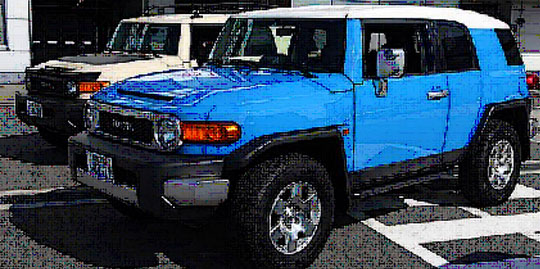

|  |
TOYOTA CITY, KOMPAS.com — Toyota Motor Corporation (TMC) mengumumkan akan mulai menjual FJ Cruiser di Jepang pada 4 Desember mendatang. FJ Cruiser dirakit di Hamura, perakitan Hino di Jepang. Penampilannya berbeda dibandingkan dengan SUV Toyota lain, seperti Land Cruiser. FJ Curiser dirancang dengan bodi besar, kap mesin panjang, dan bodi dengan lekukan sederhana sehingga memberi kesan kekar. |
Konsep desain FJ Cruiser pertama kali diperkenalkan pada 2003 di Detroit Auto Show. Tiga tahun kemudian, 2006, mobil ini diluncurkan hanya untuk pasar Amerika Utara.
Untuk performa, Toyota merancang SUV untuk pemakaian di jalan raya dan off-road. Karena itu pula, sistem 4 x 4 yang diaplikasikan adalah part time. Sewaktu-waktu, sistem itu bisa diubah menjadi 4 x 2 atau 4 x 4 sesuai dengan kondisi medan.
Transmisi otmatik
FJ Cruiser menggunakan mesin bensin 1GR-FE berkapasitas 4,0 liter dengan teknologi
D-VVT-i (Double Variable Valve Timing-intelligent), saluran isap yang bisa
diperpanjang atau diperpendek sesuai kondisi kerja mesin.
Untuk transmisi, Toyota menggunakan 5 Super ECT (otomatik). Di Jepang, SUV ini dijual dengan harga mulai 3.140.000 yen (Rp 323 juta) dan paket untuk off-road 3.320.000 yen (Rp 341 juta). Tenaga mesin yang dihasilkan tidak disebutkan. Konsumsi bahan bakar diklaim 8,4 km/liter dengan emisi CO2 mencapai 276 g/km.
Dalam debut FJ di Jepang, pembeli memiliki kesempatan untuk langsung menentukan pilihan (customized) sesuai selera dan kebutuhan mereka. Dari depan, SUV ini tampak kokoh karena kabinnya lurus dan berbodi besar. Kaca spion samping juga berukuran besar, sedangkan bemper depan tampil dengan bagian tengah yang dicat silver.
Kombinasi warna bodi dengan atap putih memberi kesan khusus pada produk Toyota yang satu ini. Pintu sampingnya menggunakan engsel di belakang sehingga bisa membuka kabin lebih lega, memudahkan pengemudi dan penumpang masuk-keluar.
⬅ Kembali ke Beranda